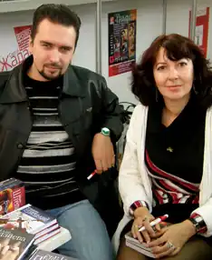

Шевченко Наталія Миколаївна та Шевченко Олександр Юрійович.
Наталка Шевченко народилася 18 вересня 1973 року в Києві. Писати почала з 14 років, і, звісно, вірші. 1993 року закінчила Київський технікум готельного господарства. Має диплом з відзнакою за спеціальністю "книгознавство".
Книги Наталка обожнює, і справді знає про них дуже багато. У 2003 року, завдяки конкурсу "Коронація Слова", в Наталчиному житті сталися відразу дві знакові події. Надруковано її перший роман – "Містичний вальс", і вона познайомилася з дуже обдарованим письменником і художником Олександром Шевченком, за якого вийшла заміж у 2006 році. На той час, окрім романтичного фентезі "Містичний вальс", завдяки тій-таки "Коронації Слова", побачили світ ще два Наталчиних романи – іронічний жіночий детектив "Учора і завжди" та психологічна драма з елементами містики "Янголи, що підкрадаються". Олександр Шевченко народився 28 грудня 1978 року в місті Києві. Після отримання середньої освіти навчався у Каневі, в Канівському училищі культури, закінчив його з відзнакою та отримав спеціальність викладача декоративно-прикладного мистецтва та організатора культурно-дозвілевої діяльності. Неофіційно робив спроби писати художні твори ще в 6 років, офіційно ж початком письменницької кар'єри можна вважати початок 2000 року, коли була завершена дебютна книжка "Глибинка", що згодом здобула відзнаку на Всеукраїнському конкурсі романів, кіносценаріїв та п'єс "Коронація слова". Наступний його "сольний" роман "Аутсайдери" посів на тому ж конкурсі лауреатську позицію. Весілля письменників Олександра і Наталки Шевченко відбулося 2 червня 2006 року. Після одруження вони вирішили об'єднати також і творчі зусилля, і першим плодом цього експерименту виявився вдалий роман жахів "Бранці мороку", котрий сягнув одразу третього місця на конкурсі. Другою книжкою тандему стала "Кривава осінь у місті Лева" – роман-джіалло, данина італійському кінематографу, і, зокрема, творчості Даріо Ардженто. Третій роман Шевченків уже готується до друку – це знову суміш жахів, містики і мелодрами під назвою "Оксамитовий перевертень". Найпопулярніші твори: Н. Шевченко – "Містичний вальс" (2003), "Учора і завжди" (2004), "Янголи, що підкрадаються" (2006); О. Шевченко – "Глибинка" (2003), "Аутсайдери" (2004); Спільні книжки – "Бранці мороку" (2007), "Кривава осінь у місті Лева" (2008). Серія "Дивний детектив": "Команда мрії. Велике новорічне слідство". "Команда мрії. Все в шоколаді". "Команда мрії. Нічна історія зі скарбами". Джерело: https://lavkababuin.com/author/nataliya-ta-oleksandr-shevchenki/